Actividad 08 Lab: File path traversal, traversal sequences blocked with absolute path bypass
Reporte Original
Reporte de Actividad Detallado incluyendo referencias // Extensión: .pdf
Nivel de Laboratorio
PRACTITIONER
Clasificación
Path Traversal / Directory Traversal (CWE-22). Lectura arbitraria de archivos del servidor.
Objetivo
Explotar la funcionalidad de visualización de imágenes de productos para recuperar el contenido del archivo /etc/passwd del servidor.
Marco teórico y explicación técnica
La aplicación vulnerable carga las imágenes de los productos de su catálogo a través de un endpoint del tipo: GET /image?filename=7.jpg.
El servidor concatena el valor recibido en el parámetro filename con un directorio base predeterminado en el sistema de archivos (por ejemplo, /var/www/images/) para localizar y devolver el archivo correspondiente. A diferencia del laboratorio introductorio, la aplicación bloquea de forma explícita las secuencias de traversal relativas, es decir, cualquier cadena que contenga ../, eliminándolas o rechazando la petición cuando las detecta.
Sin embargo, dicha sanitización presenta una falla de diseño importante: el filtro únicamente contempla rutas relativas construidas con ../, pero no valida si la cadena suministrada corresponde a una ruta absoluta. Como el sistema operativo del servidor (Linux) interpreta cualquier ruta que comience con / como una ruta absoluta desde la raíz del sistema de archivos, es posible omitir por completo el directorio base de imágenes de la aplicación simplemente indicando la ruta completa del archivo objetivo.
Este comportamiento corresponde a un caso clásico de bypass de sanitización por cobertura incompleta del filtro (CWE-22 — Improper Limitation of a Pathname to a Restricted Directory). El desarrollador anticipó un vector de ataque pero no consideró un vector equivalente, dejando expuesta la misma clase de vulnerabilidad.
Desde la perspectiva de los principios de seguridad OWASP, este caso ilustra una violación del principio de "defensa en profundidad": una única capa de validación fue tratada como suficiente. También ejemplifica una falla del principio CIA en su componente de Confidencialidad, ya que un usuario no autorizado logra leer información del servidor (credenciales y cuentas del sistema operativo) a la que no debería tener acceso. Un atacante real podría emplear esta misma técnica para leer archivos de configuración de la aplicación, código fuente o claves privadas.
Virtual Backend Sandbox (Absolute Path Bypass)
Procedimiento paso a paso y evidencias
Paso 1
Se abrió Burp Suite Community Edition y, en la ventana de bienvenida, se seleccionó la opción "Temporary project in memory". Esta modalidad crea un proyecto que existe únicamente en la memoria RAM durante la sesión de trabajo, sin generar archivos en disco; es la opción recomendada para ejercicios puntuales de práctica como este laboratorio, donde no es necesario conservar el historial de peticiones entre sesiones.
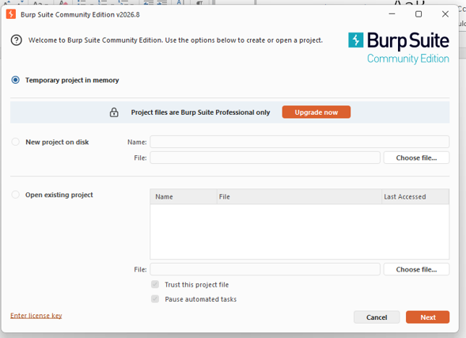
Paso 2
En la siguiente ventana se eligió la configuración "Use Burp defaults" en lugar de cargar un archivo de configuración personalizado, y se presionó el botón "Start Burp". Esto inicializa la herramienta con sus valores predeterminados de fábrica: proxy de intercepción escuchando en 127.0.0.1:8080, certificado CA propio para inspeccionar tráfico HTTPS y todos los módulos (Proxy, Repeater, Intruder, etc.) disponibles.
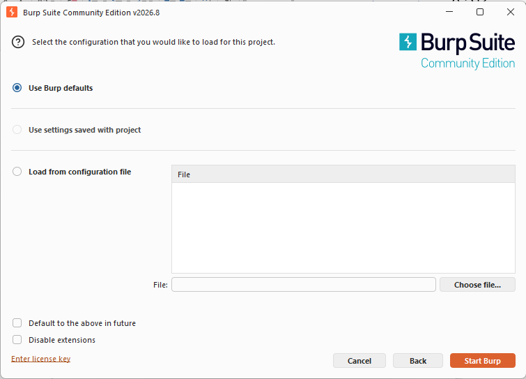
Paso 3
Burp Suite abrió su interfaz principal directamente en la pestaña Proxy › Intercept, con el interceptor apagado ("Intercept is off"). En este estado, el proxy permite pasar el tráfico sin detenerlo, lo cual sirvió como punto de partida antes de comenzar a capturar peticiones.
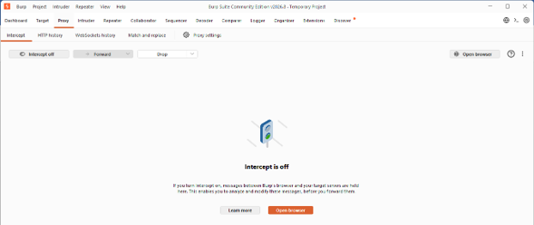
Paso 4
Desde el navegador habitual se accedió a la página de descripción del laboratorio en PortSwigger Web Security Academy, donde se puede leer el objetivo (recuperar /etc/passwd) y el estado inicial "Not solved". Se dio clic en el botón "ACCESS THE LAB", lo que generó una instancia única y temporal del laboratorio con una URL aleatoria asociada a la sesión.
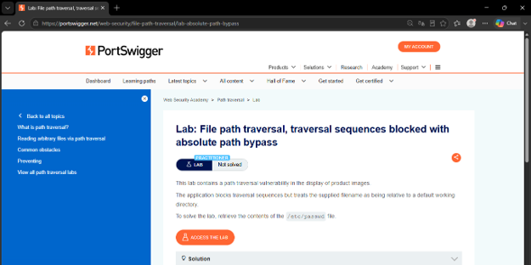
Paso 5
Se regresó a Burp Suite y, en la pestaña Proxy, se activó el botón "Intercept on". A partir de este momento, cualquier petición HTTP/HTTPS que pase por el proxy quedará detenida hasta que se decida reenviarla (Forward), descartarla (Drop) o editarla manualmente. Después se utilizó el botón "Open browser", ubicado en la esquina superior derecha de la pestaña, el cual abre una instancia de Chromium ya preconfigurada por Burp con el proxy y el certificado CA correctos, evitando así tener que configurar manualmente el proxy del sistema operativo.
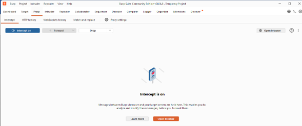
Paso 6
En el navegador embebido de Burp se pegó la URL del laboratorio obtenida en el paso 4. Al intentar cargar la página, Burp interceptó de inmediato la primera petición generada: una solicitud GET / dirigida al dominio del laboratorio, correspondiente al documento HTML principal de la aplicación. Se inspeccionaron sus cabeceras (User-Agent, cookies de sesión, etc.) y se presionó "Forward" para permitir que continuara su curso hacia el servidor.
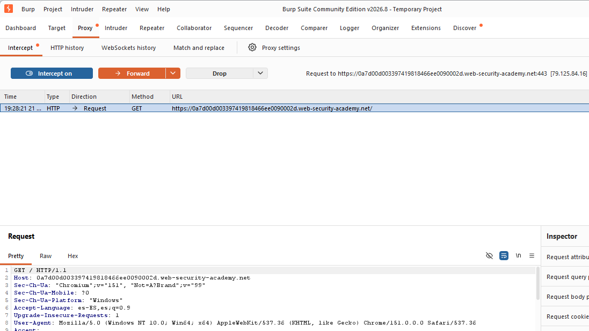
Paso 7
Al seguir reenviando peticiones, Burp fue deteniendo, una a una, las múltiples solicitudes GET /image?filename=N.jpg que el navegador dispara automáticamente para cargar las miniaturas de cada producto del catálogo de la tienda "We Like To Shop" (por ejemplo, filename=6.jpg, filename=7.jpg, filename=18.jpg, filename=23.jpg, etc.). Esta cola de peticiones resultó especialmente reveladora, pues expuso con claridad el patrón que utiliza la aplicación para referenciar cada imagen: un simple nombre de archivo pasado como parámetro filename, sin ningún tipo de token o identificador indirecto que dificulte su manipulación.
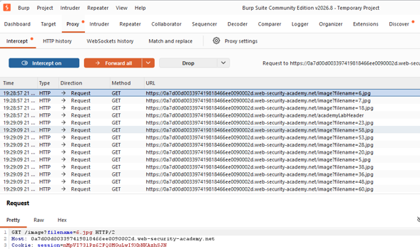
Paso 8
Una vez reenviadas todas las peticiones pendientes, la página de la tienda terminó de renderizarse por completo, mostrando el catálogo de productos y el estado "Not solved" en la esquina superior derecha, confirmando que el laboratorio aún no había sido resuelto en ese punto.
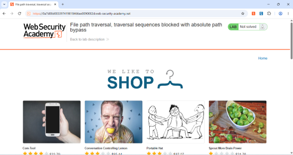
Paso 9
Del catálogo se seleccionó el producto "Conversation Controlling Lemon", con el único fin de generar tráfico hacia su página de detalle. Burp interceptó, en primer lugar, un mensaje WebSocket de tipo PING (propio del mecanismo interno de la academia para verificar el estado del laboratorio) y, a continuación, la petición GET /product?productId=2, correspondiente a la navegación hacia el detalle de ese producto en específico.
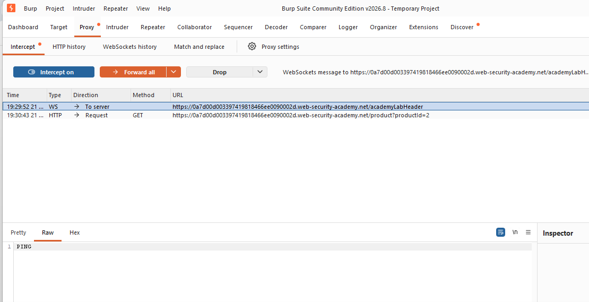
Paso 10
Al reenviar la petición anterior y terminar de cargar la página de detalle del producto, Burp interceptó la petición que realmente interesa para la explotación: GET /image?filename=7.jpg, correspondiente a la imagen grande de ese producto en particular. Esta es la petición que se aprovechará para inyectar el payload, ya que es la que determina, a partir de un valor de texto controlado por el cliente, qué archivo del servidor se va a leer y devolver.
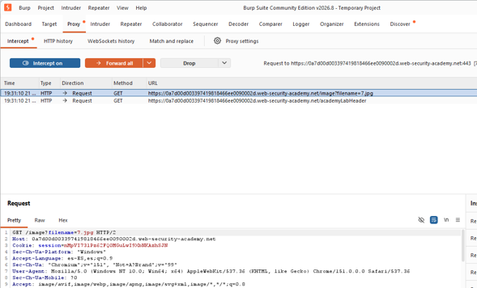
Paso 11
Sobre esta petición interceptada se dio clic derecho para desplegar el menú contextual de Burp y se seleccionó la opción "Send to Repeater" (atajo Ctrl+R). Esta acción envía una copia exacta de la petición a la pestaña Repeater, herramienta que permite reenviar y modificar manualmente una misma petición HTTP tantas veces como sea necesario, observando en tiempo real la respuesta del servidor a cada variación, sin necesidad de volver a interactuar con el navegador ni de reinterceptar el tráfico.
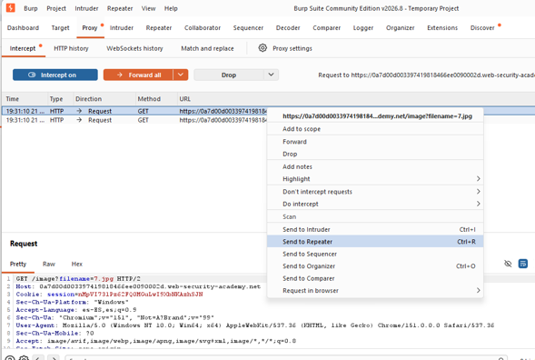
Paso 12
Ya dentro de Repeater, y antes de modificar nada, se envió la petición tal cual llegó (filename=7.jpg) presionando el botón "Send". El objetivo de este envío de control fue confirmar el comportamiento legítimo del endpoint: el servidor respondió con un código 200 OK, cabecera Content-Type: image/jpeg y un cuerpo binario correspondiente a los bytes de la imagen del producto, lo que sirvió como línea base para comparar contra la respuesta obtenida tras la explotación.
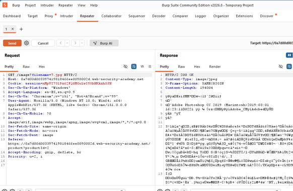
Paso 13
En el panel de Request de Repeater se editó directamente el valor del parámetro filename, reemplazando 7.jpg por la ruta absoluta /etc/passwd, quedando la primera línea de la petición como GET /image?filename=/etc/passwd HTTP/2. El resto de las cabeceras (Host, Cookie de sesión, User-Agent, etc.) se dejaron intactas, ya que no forman parte del mecanismo de validación de la ruta y no era necesario modificarlas para lograr la explotación.
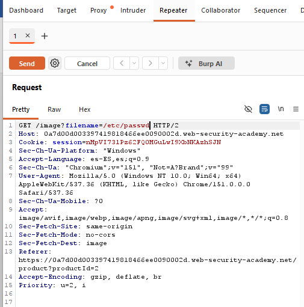
Paso 14
Al presionar "Send" con la petición ya modificada, el servidor respondió nuevamente con un código 200 OK, pero en esta ocasión el cuerpo de la respuesta ya no correspondía a una imagen, sino a texto plano con el listado completo de cuentas del sistema operativo del servidor (root, daemon, bin, sys, www-data, backup, peter, entre otras), es decir, el contenido real del archivo /etc/passwd. Este resultado confirma de manera contundente que el filtro de traversal de la aplicación fue evadido con éxito.
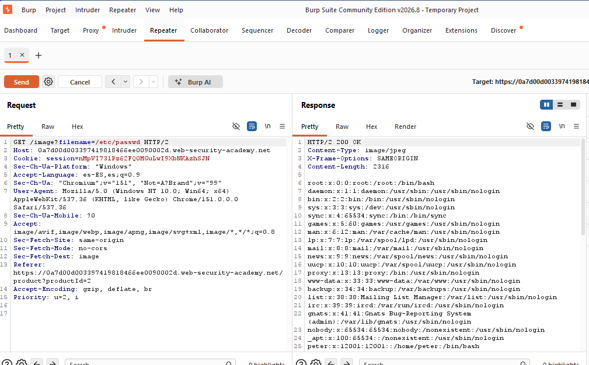
Paso 15
Finalmente, se regresó a la pestaña del navegador donde estaba abierta la página del laboratorio en PortSwigger y se refrescó. El indicador de estado, ubicado junto al botón "ACCESS THE LAB", cambió de "Not solved" a "Solved" (con la marca de verificación característica), lo que constituye la confirmación oficial, por parte de la plataforma, de que la vulnerabilidad fue explotada correctamente y el objetivo del laboratorio se cumplió en su totalidad.
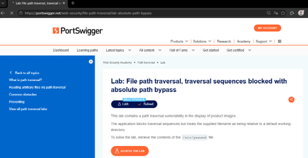
Explicación del payload
Este valor se utilizó como reemplazo del nombre de archivo esperado por la aplicación (por ejemplo, 7.jpg) en el parámetro filename de la petición GET /image.
Al tratarse de una ruta absoluta de Linux (comienza con "/"), el sistema de archivos la resuelve desde la raíz del sistema, ignorando por completo el directorio base de imágenes configurado por la aplicación (/var/www/images/).
No fue necesario emplear secuencias de retroceso "../" porque no se está "escapando" de un directorio mediante navegación relativa, sino indicando de forma directa la ubicación absoluta del archivo, mecanismo que el filtro de la aplicación no contempla ni bloquea.
El archivo /etc/passwd se utiliza como prueba de concepto estándar en este tipo de laboratorios porque, en sistemas Unix/Linux, es legible por cualquier usuario del sistema y su contenido (listado de cuentas, shells y directorios home) es fácilmente identificable, lo que permite comprobar de forma inequívoca que se logró la lectura arbitraria de archivos del servidor.
A diferencia del laboratorio básico de Path Traversal —donde el payload típico es ../../../etc/passwd—, aquí no se necesitan los tres niveles de "../" porque la ruta absoluta no depende de cuántos directorios haya que subir desde la carpeta base; simplemente se le indica al sistema operativo la ubicación final y definitiva del archivo, saltándose por completo la lógica de concatenación relativa que la aplicación esperaba controlar.
Mitigación recomendada
- Evitar el uso de datos suministrados por el usuario para construir rutas de archivo; en su lugar, emplear identificadores indirectos (por ejemplo, un ID numérico o un mapa interno de nombres permitidos).
- Validar la entrada contra una lista blanca (whitelist) de nombres o extensiones de archivo permitidos, en lugar de intentar filtrar patrones maliciosos (blacklist), enfoque que es propenso a bypass como el demostrado en este laboratorio.
- Canonicalizar la ruta resultante (por ejemplo, con funciones equivalentes a realpath()) y verificar que la ruta final permanezca dentro del directorio base autorizado antes de acceder al archivo.
- Rechazar explícitamente cualquier entrada que constituya una ruta absoluta (que inicie con "/" en Linux o con una letra de unidad en Windows), además de continuar bloqueando las secuencias de traversal relativas.
- Ejecutar el proceso del servidor bajo el principio de mínimo privilegio, de modo que no tenga permisos de lectura sobre archivos sensibles del sistema operativo.
- Utilizar bibliotecas o funciones de framework diseñadas para el acceso seguro a archivos, evitando construir rutas manualmente mediante concatenación de cadenas.